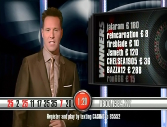

Hot Numbers
A complaint to Ofcom about the misrepresentation of randomness:

I have been watching televised roulette on Channel 5, and have come to the conclusion that it is in violation of Section 5.7 of the Ofcom Broadcasting Code.
The Hot Numbers section of the screen shows the last 9 results of the wheel spin. These numbers are clearly facts about past performance, but they are not balanced by a statement about future performance. On their own they suggest to the viewer that a pattern can be detected which could allow the next result to be predicted. Of course the outcome of the next spin is entirely random, and not influenced by past results in any way.
The Hot Numbers should carry a warning to make future performance clear; something like "the outcome of the next spin is not affected by previous results"